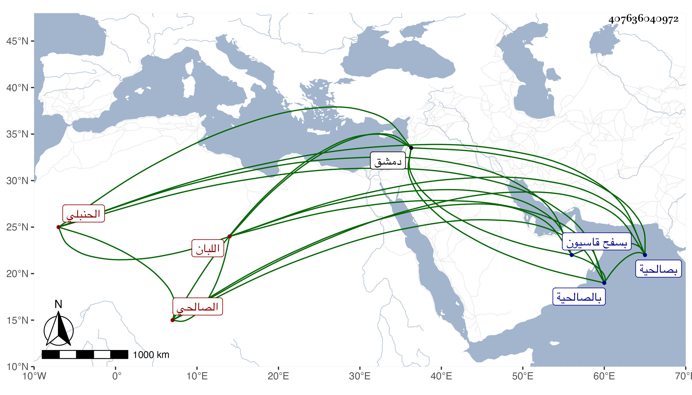

0902Sakhawi.DawLamic.ITO20230111-ara1.EIS1600.407636040972
Biography ID: 407636040972
766
خليل بن محمد بن محمد بن علي بن حسن غرس الدين الصالحي الحنبلي اللبان ويعرف بابن الجوازة بجيم مفتوحة ثم واو مشددة بعدها زاي ثم هاء . ولد قبل سنة سبعين وسبعمائة على ما يقتضيه سماعه فإنه سمع في سنة اثنتين وسبعين وسبعمائة من أبي العباس أحمد بن العماد بن أبي بكر بن أحمد بن عبد الحميد المقدسي الأول من أول حديث ابن السماك وكذا سمع من عمر بن أحمد الجرهمي وغيره وحدث سمع منه الفضلاء ولقيته بصالحية دمشق فقرأت عليه الجزء المعين وغيره ، وكن خيرا مثابرا على الجماعات مقبلا على شأنه . مات في ذي القعدة سنة تسع وخمسين بالصالحية ودفن بسفح قاسيون . ومضى أحمد بن محمد بن علي بن محمد بن شعبان الصالحي العطار ويعرف بابن الجوازة . وسيأتي في محمد بن محمد بن علي بن محمد بن شعبان وهما أخوان ، وكان أولهما عم صاحب الترجمة والآخر أبوه . وحينئذ فحسن في نسبه غلط .
